Aera für iPhone und Apple Watch
Erlebe deinen Lauf noch einmal. Versteh deinen Körper.
Deine Läufe in 3D über den echten Straßen. Deine Werte, gemessen an deinem Normal.
Kostenlos starten. Kein Konto.
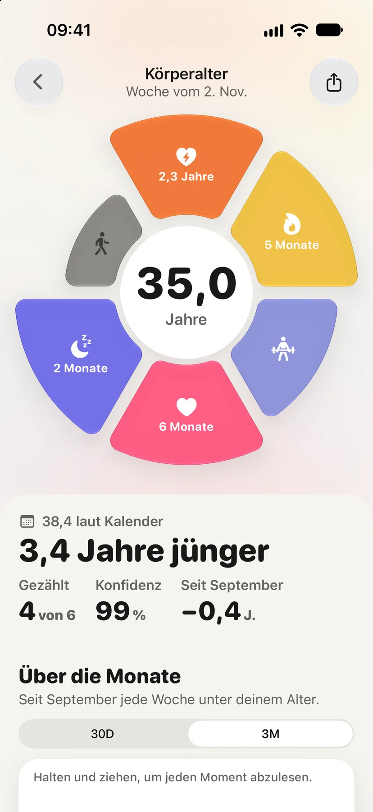
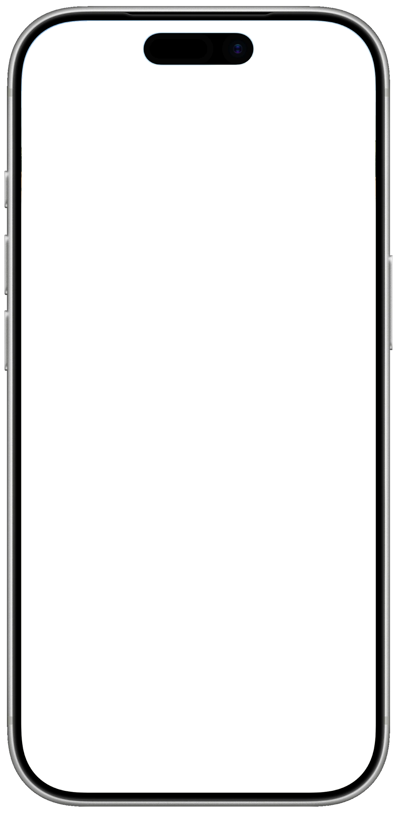
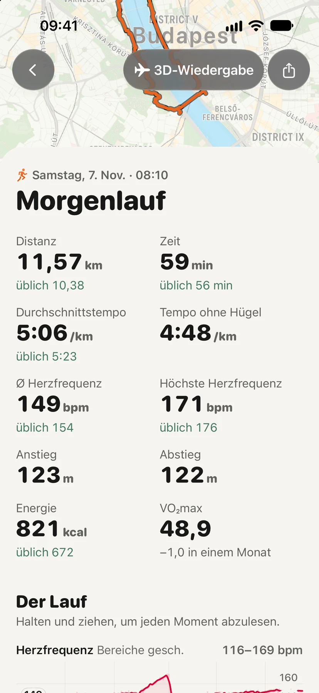
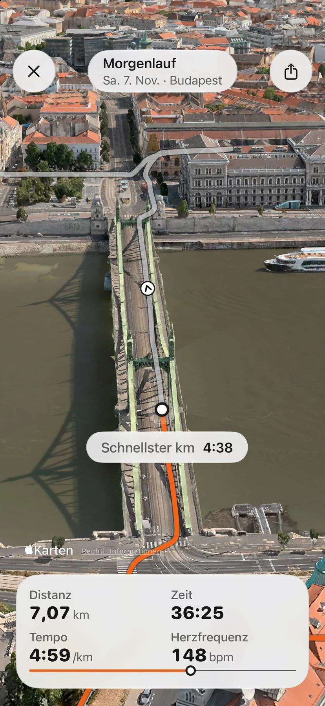
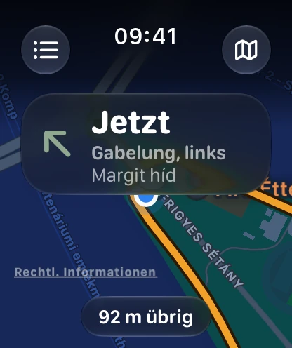
Erlebe deinen
Lauf noch einmal.
Ein Samstagmorgenlauf durch Budapest, 11,57 km. Das hat Aera daraus gemacht.
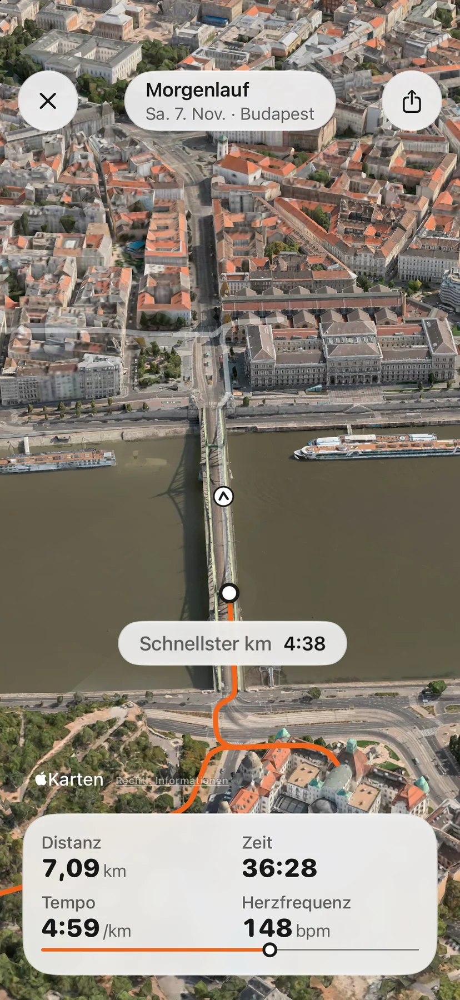
4:38 über die Freiheitsbrücke.
Aera spielt jeden Lauf der letzten Woche über dem echten Gelände ab, mit Distanz, Zeit, Tempo und Herzfrequenz wie unterwegs, und markiert deinen schnellsten Kilometer genau dort, wo er war.3
11,57 km, Tempo 5:06.
Dann der ganze Lauf, jeder Wert neben deinem eigenen Normal.1 Dein übliches Tempo ist 5:23. Dein Puls lag im Schnitt bei 149, üblich sind 154.
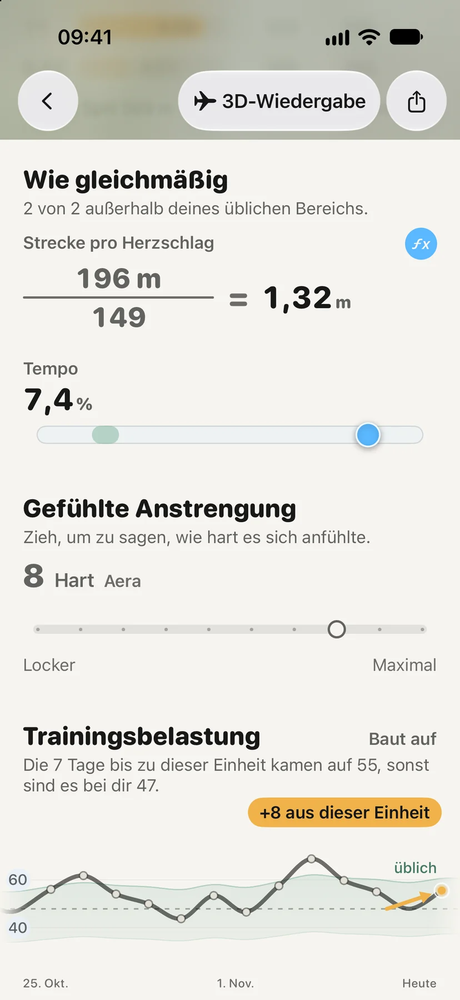
1,32 m pro Herzschlag.
Und der Rechenweg hinter jeder Zahl. 196 Meter auf 149 Schläge, wie gleichmäßig du gelaufen bist, wie hart es sich anfühlte. Tippe auf einen Wert und sieh, wie er entsteht.
Funktioniert mit
- Apple Watch
- Garmin
- Polar
- COROS
- Oura
- iPhone
Versteh
deinen Körper.
Ein Ruhepuls, der für den einen normal ist, kann für den anderen ungewöhnlich sein.2 Deshalb misst Aera deine Nächte, dein Herz und deinen Blutdruck an deinen eigenen Wochen und zeigt seine Gründe.
35,0Jahre
Körperalter. 3,4 Jahre jünger als der Kalender, aus VO₂max, Ruhepuls, HRV, Schlaf und Schritten, jeder Teil sichtbar.4
80Sehr gut
Letzte Nacht. 6 h 53 m Schlaf, 37 Minuten unter einem Bedarf, der aus deinen eigenen Nächten gelernt ist.
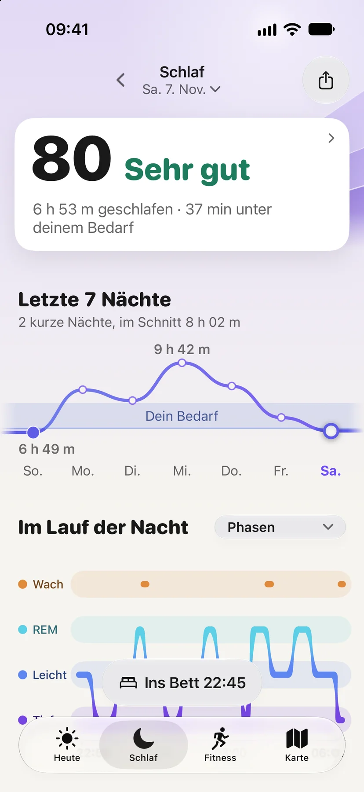
124/77
Blutdruck. Morgens neben abends, mit Markierungen und als PDF für deinen Arzt.
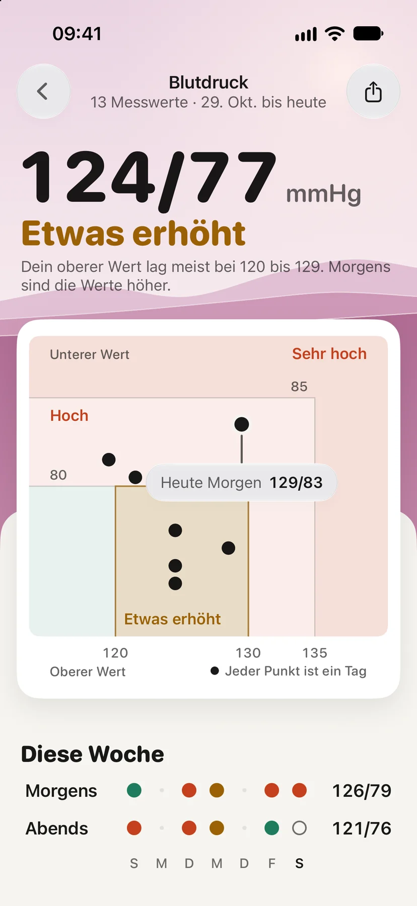
Ein Blick in die App.
Aera im App Store ansehen ›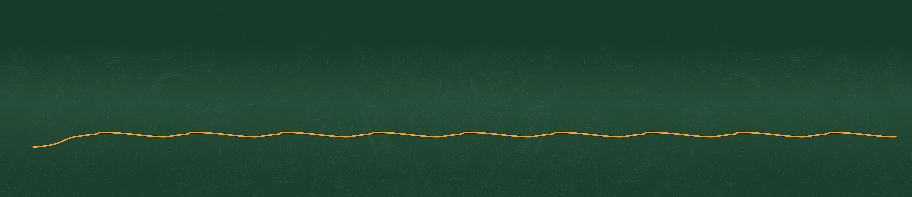
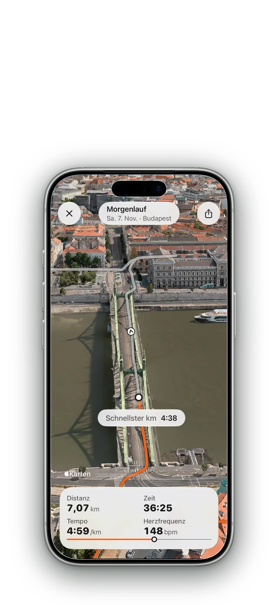
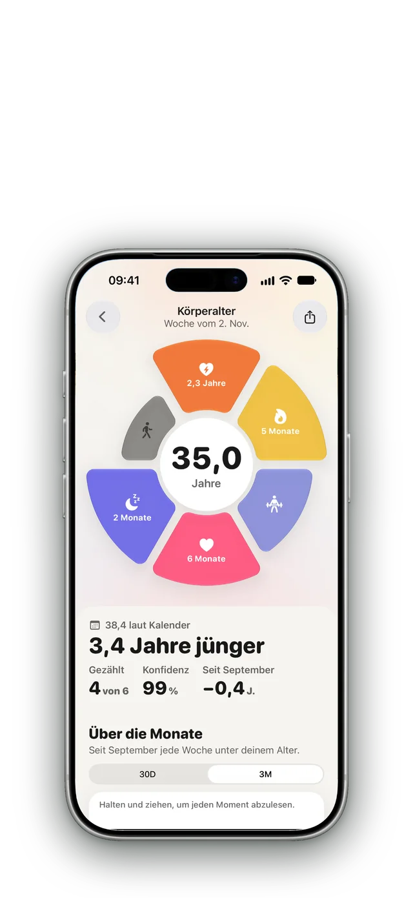
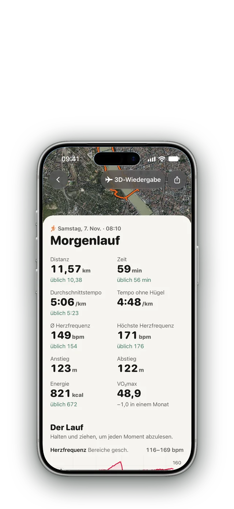
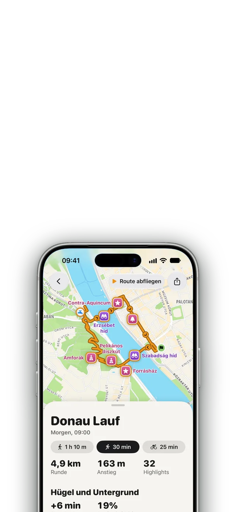
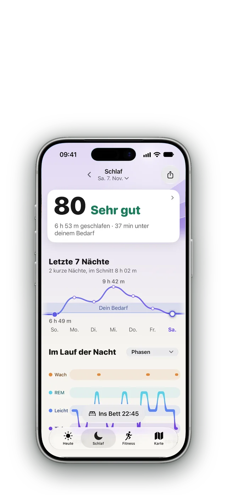
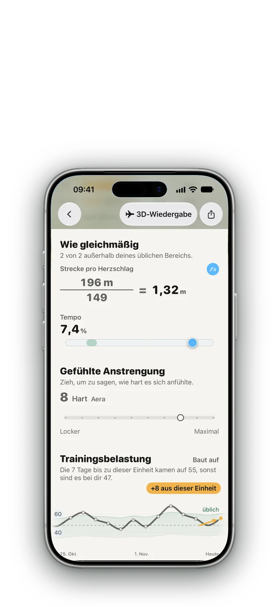
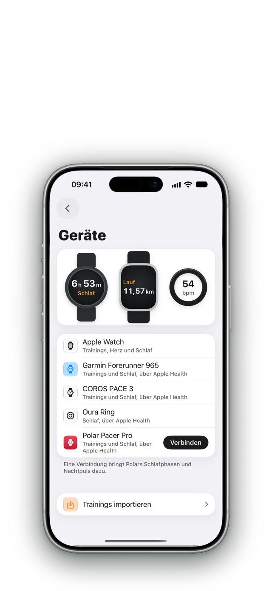
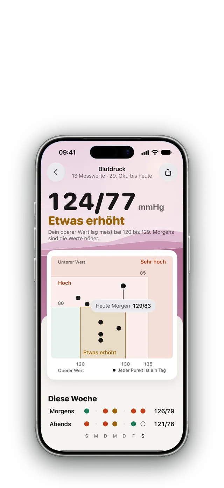
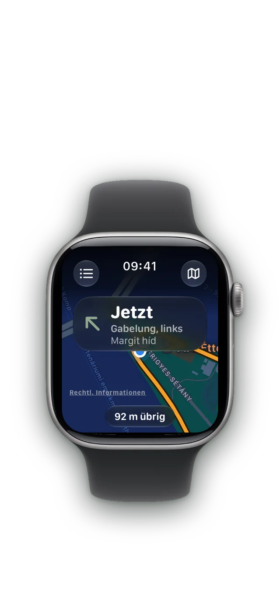
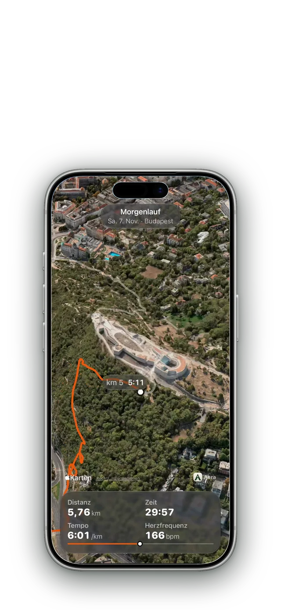
Raus vor die Tür.
Lass dir eine Runde ab deinem Standort planen, nach Distanz oder Minuten, und folge jeder Abbiegung am Handgelenk. Mit Apple Watch, jeder anderen Uhr oder ganz ohne.
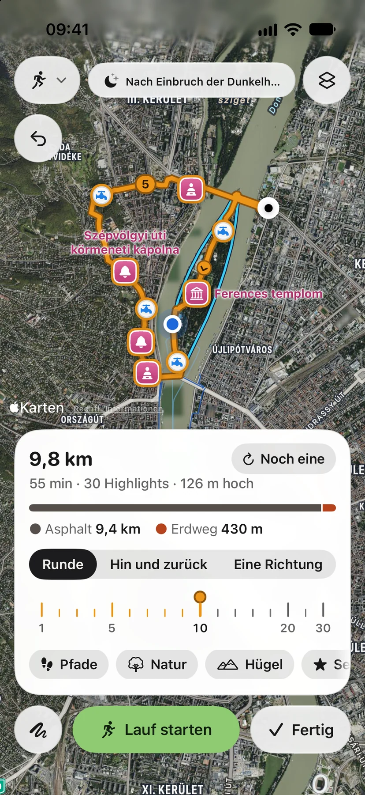
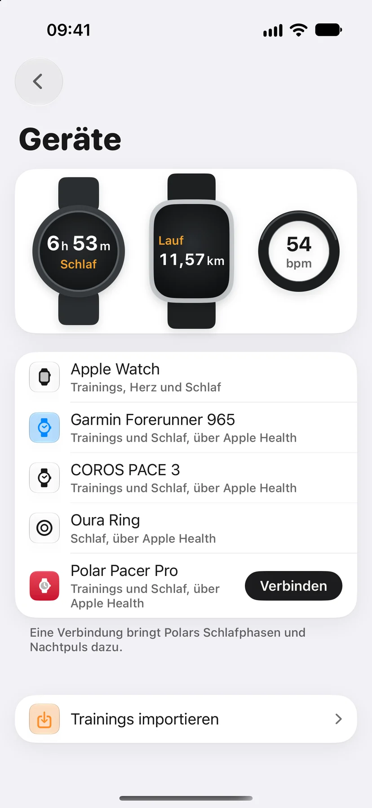
Deine Gesundheit bleibt auf deinem iPhone.
Kein Konto
App öffnen und loslegen. Es gibt nichts, wofür du dich anmelden musst.
Kein Gesundheitsserver
Aera liest Apple Health auf deinem iPhone und rechnet alles dort.
Nie deine Gesundheitsdaten
Nutzungsstatistiken und Absturzberichte enthalten nie Gesundheitsdaten. Beides schaltest du in den Einstellungen aus.
Neu in Aera 3.4
Alle Neuerungen ›Die 3D-Ansicht, neu gebaut
Vier Live-Werte, Kameraperspektiven und Kartenstile, dazu mit Premium ein Video im Hochformat zum Teilen.
Und vieles mehr
Jede Änderung in diesem Update, auch die Fehlerbehebungen, findest du in den Einstellungen unter Was ist neu.
Wie anstrengend es war
Bewerte jedes Training von 1 bis 10. Bestleistungen sagen, wo ein Lauf steht, etwa zweitschnellster von 41.
Verläufe
Kardiofitness, Ruhepuls und Ausdauer, jeweils mit der Angabe, ob eine Veränderung echt ist.
Jede Uhr, oder keine
Volle Seiten für Garmin, Polar und COROS. Garmin-, FIT-, GPX- und TCX-Dateien kommen mit ihrer Route.
Wie war heute?
Sag Aera, wie sich der Tag anfühlt, und trag eine Auszeit ein, wenn du krank oder unterwegs bist.
Ein größerer Field Guide
16 Artikel neu geschrieben und 10 neue, jeweils mit Quellen.
Fragen.
Was macht Aera?
Aera liest, was deine Uhr, dein Ring oder dein iPhone in Apple Health ablegt, und sagt dir, was diese Zahlen für dich bedeuten. Schlaf, Stress, Belastung und jeder Lauf werden an deinem Normalwert gemessen und in klaren Worten erklärt, und hinter jeder Zahl steckt ein kurzer Artikel, wie sie zustande kommt. Dazu plant Aera Routen mit Navigation und spielt Läufe in 3D ab.
Brauche ich eine Apple Watch?
Nein. Aera arbeitet mit Apple Health, also passt jede Uhr, jeder Ring und jede App, die Schlaf, Puls und Training dort ablegt: Apple Watch, Garmin, Oura, WHOOP und andere. Mit nur einem iPhone nutzt Aera Schritte und Trainings. Was nächtliche Herzdaten braucht, startet, sobald es welche gibt.
Ist Aera kostenlos?
Ja. Kostenlos sind deine Werte jeden Tag mit ihren letzten 30 Tagen, jeder Lauf der letzten Woche in 3D, der Routenplaner mit Abbiegehinweisen, fünf gespeicherte Routen, der Field Guide und die letzten 30 Tage jedes Exports. Premium behält deinen ganzen Verlauf, jeden Lauf in 3D, egal wie alt, die 3D-Ansicht als Video zum Teilen, weitere gespeicherte Routen und die längeren Berichte. Das Jahresabo beginnt mit einer kostenlosen Woche.
Brauche ich ein Konto? Wohin gehen meine Daten?
Ein Konto gibt es nicht. Aera liest Apple Health auf deinem iPhone und rechnet auch dort, deine Gesundheitsdaten bleiben also auf dem Gerät. Anonyme Nutzungsstatistiken sind aus, bis du sie einschaltest (in der Schweiz und in Großbritannien an, bis du sie ausschaltest), und enthalten nie Gesundheitsdaten.
Woher weiß Aera, was für mich normal ist?
Aera lernt in einigen Wochen aus deinen eigenen Nächten und Einheiten, was bei dir üblich ist, und vergleicht jeden neuen Tag damit. Solange zu wenig Daten da sind, rät Aera nicht, sondern sagt, dass es noch lernt.
Ist Aera ein Medizinprodukt?
Nein. Aera ist für Wohlbefinden und Training im Alltag gedacht. Messwerte der Uhr wie Schlafphasen sind Schätzungen, und jeder Artikel sagt, wo seine Zahl an Grenzen stößt.
In welchen Sprachen gibt es Aera?
Vollständig auf Englisch, Ungarisch, Deutsch, Spanisch und Französisch, teilweise auf Italienisch, Japanisch, Portugiesisch und traditionellem Chinesisch.
Erlebe deinen Lauf noch einmal.
Versteh deinen Körper.
Laden imApp Store
Kostenlos starten. Kein Konto. Funktioniert mit der Uhr, die du schon trägst.
- Fisher AJ, Medaglia JD, Jeronimus BF. Lack of group-to-individual generalizability is a threat to human subjects research. PNAS. 2018;115(27):E6106–E6115.
- Quer G, Gouda P, Galarnyk M, Topol EJ, Steinhubl SR. Inter- and intraindividual variability in daily resting heart rate and its associations with age, sex, sleep, BMI, and time of year. PLOS ONE. 2020;15(2):e0227709.
- Die 3D-Wiedergabe ist für Läufe, Spaziergänge, Radtouren und Wanderungen der letzten 7 Tage kostenlos. Ältere Trainings mit Premium.
- Das Körperalter ist eine Schätzung für das tägliche Wohlbefinden, keine medizinische Messung. Es braucht eine Uhr, die VO₂max und Herzfrequenz misst.
- Garmin-, Polar- und COROS-Trainings kommen über Apple Health ohne Route an. Importiere die Trainingsdatei, um sie abzuspielen (so geht es).